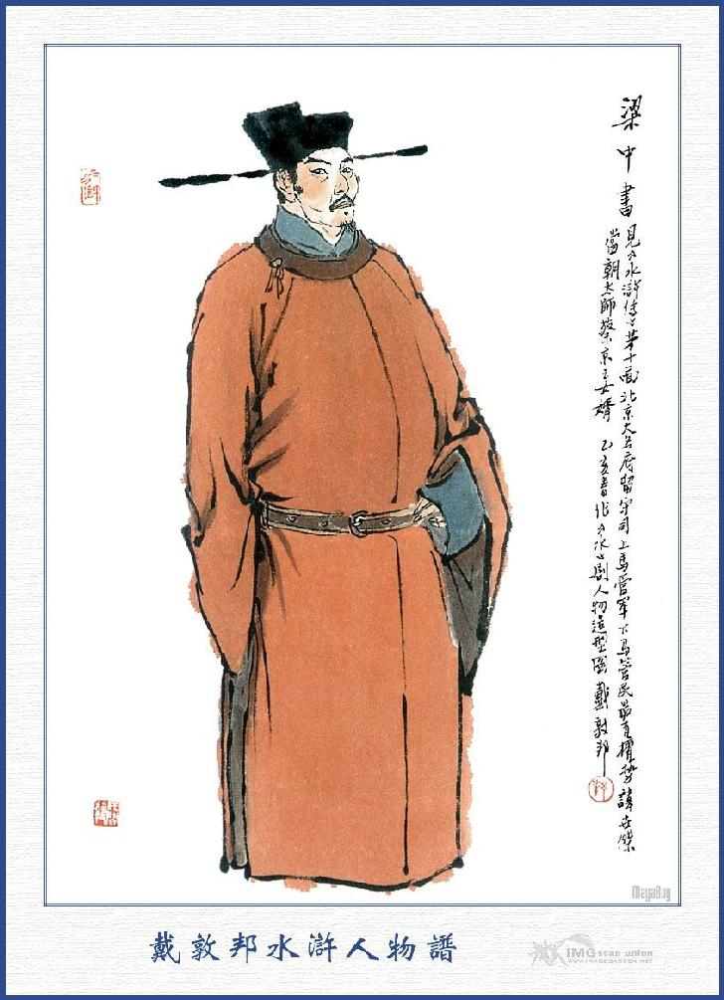
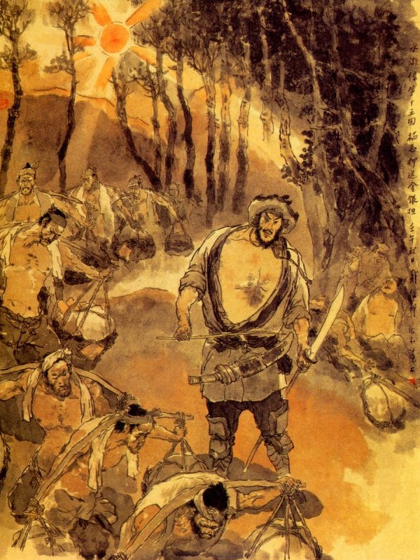
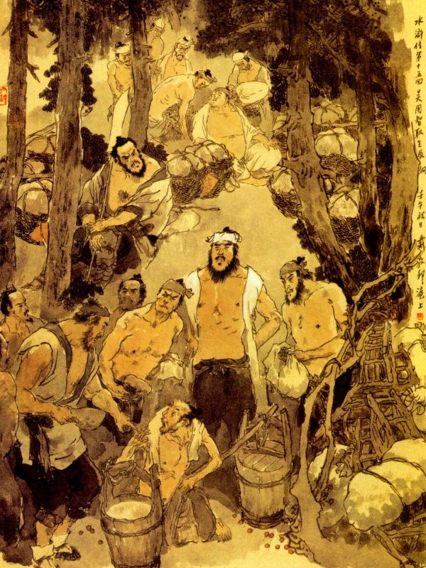
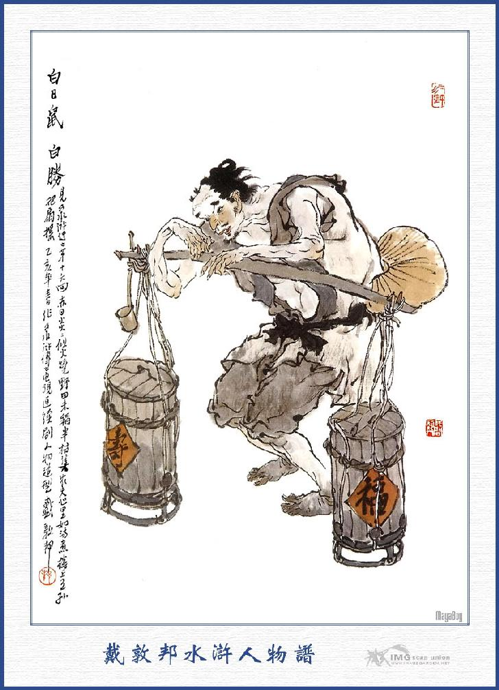

Khi ấy có người chạy vào cầm lấy tay Công Tôn Thắng mà hỏi, Tiều Cái bèn ngẩng lên nom, thì chính là Trí Đa Tinh Ngô Dụng, liền cười mà bảo rằng:
- Tiên sinh, mời tiên sinh ra đây nói chuyện.
Ngô Dụng cũng cười mà nói rằng:
- Tôi nghe tiếng ông Nhập Văn Long Công Tôn Thắng đã lâu, ai ngờ ngày nay mới được gặp ở đây!
Tiều Cái lại trỏ Ngô Dụng mà bảo Công Tôn Thắng rằng:
- Tiên sinh này là Trí Đa Tinh Ngô Dụng đây.
Công Tôn Thắng nghe nói ra dáng vui mừng mà rằng:
- Ngài là Gia Lượng tiên sinh phải không? Tiếng ngài lừng lẫy bấy lâu, mà tôi bây giờ mới được gặp ở nhà Bảo Chính đây, thế mới biết Bảo Chính là người trọng nghĩa khinh tài, cho nên bọn hào kiệt không ai là không đến đây tụ họp.
Tiều Cái nói:
- Hiện còn có mấy người bạn nữa ở trong kia, xin mời ngài vào đấy để cho biết nhau một thể.
Nói đoạn ba người cùng vào nhà trong, cùng Lưu Đường và ba anh em họ Nguyễn làm lễ tương kiến, đoạn rồi đều nói lên rằng:
- Ngày hôm nay được gặp gỡ đông đúc thế này, cũng không phải là sự ngẫu nhiên, vậy xin Tiều Bảo Chính ngồi vào ghế giữa cho.
Tiều Bảo Chính khiêm tốn mà rằng:
- Chết nỗi! Tôi là anh chủ nhân tầm thường, đâu dám ngồi trên như thế!
Ngô Dụng nói:
- Bảo Chính là người hơn tuổi, xin cứ ngồi trên cho phải.
Tiều Cái biết thế từ chối không tiện; đành phải ngồi trên ghế thứ nhất, để Ngô Dụng ngồi ghế thứ nhì, Công Tôn Thắng ghế thứ ba, Lưu Đường thứ tư, Nguyễn Tiểu Nhị thứ năm, Nguyễn Tiểu Ngũ thứ sáu, Nguyễn Tiểu Thất ngồi xuống ghế thứ bảy. Đoạn rồi sai người lấy các thứ rượu nhắm khác lên, cũng đánh chén làm vui.
Khi chè chén ung dung, Ngô Dụng nói với mọi người rằng:
- Mới đây Bảo Chính nằm mộng thấy bảy ngôi sao Bắc Đẩu rơi xuống nóc nhà, thế mà nay chúng ta lại tụ họp bảy người ở đây, thì có lẽ là trên ứng mệnh trời, cái món phú quý kia, tất là bỏ thông tay mà lấy được. Vậy hôm trước đã nói với Lưu Huynh, để đi thám thính đường lối đi của họ, xin đến sáng mai xin ngô huynh đi sớm giúp cho.
Công Tôn Thắng nghe nói liền ứng lên rằng:
- Việc ấy không cần phải thám thính nữa, bần đạo đã biết rõ là họ đây theo con đường lối Hoàng Nê Cương rồi.
Tiều Cái nói:
- Về phía đông Hoàng Nê Cương chừng 10 dặm đường, là thôn An Lạc, ở đấy có một tay hảo hán, gọi là Bạch Nhật Thử Bạch Thắng, cũng thường hay đến chơi tôi, mà tôi vẫn cấp đỡ cho luôn.
Ngô Dụng nói:
- Thế thì một sao sáng ở trên sao Bắc Đẩu, có lẽ là ứng vào người ấy chăng? Nếu vậy thì ta lại có việc dùng hắn được.
Lưu Đường hỏi:
- Từ đây đến Hoàng Nê Cương nghe chừng cũng xa, không biết rằng chúng ta định ước ở đâu cho tiện.
Ngô Dụng đáp:
- Chỉ ở nhà Bạch Thắng, tức là chỗ dung thân của chúng ta đó, vả chăng ta cũng phải cần đến Bạch Thắng kia mà.
Tiều Cái lại hỏi Ngô Dụng rằng:
- Tiên sinh định lấy cách êm ái, hay lấy cách cường ngạnh?
Ngô Dụng cười mà đáp rằng:
- Việc ấy tôi đã an bài quy cũ rồi, để ta xem tinh binh của họ, đáng lấy bằng sức khỏe, thì ta lấy bằng sức khỏe, đáng lấy bằng trí khôn, thì ta lấy bằng trí khôn. Tôi có một kế như thế này, thế này, không biết rằng có hợp ý các ông không?
Tiều Cái nghe xong dậm chân xuống đất mà khen rằng:
- Diệu kế, diệu kế, không trách gọi là tiên sinh Trí Đa Tinh, thực là xứng đáng, dẫu đến Gia Cát Lượng cũng đến thế mà thôi.
Ngô Dụng mỉm cười mà rằng:
- Thôi đừng nói đến nữa, tai vách mạch rừng phải cho cẩn thận, sao cho mình biết với nhau là được.
Tiều Cái lại nói với mọi người rằng:
- Bây giờ ba bác họ Nguyễn hãy trở về, để bao giờ có việc, sẽ đến đây tụ họp với nhau, Ngô tiên sinh thì cũng về dạy học, còn Công Tôn tiên sinh cùng với Lưu Đường, thì nghỉ lại ở đây với tôi.
Bàn định xong; lại cùng nhau uống rượu, đến khuya mới nghỉ. Ngày hôm sau cơm nước xong rồi. Tiều Cái lấy 30 vạn hoa ngân đưa tặng ba anh em họ Nguyễn mà nói rằng:
- Gọi là một chút lòng thành, xin các bác thu nhận lấy cho.
Ba người từ chối không lấy, nhưng Tiều Cái nhất định không nghe, sau bất đắc dĩ phải cùng nhau nhận lấy mà bái biệt ra về. Khi đưa chân ra cổng trang, Ngô Dụng lại ghé tai ba người mà dặn với rằng:
- Cứ thế này, cứ thế này, hễ đến hẹn chớ để lỡ mới được.
Ba người vâng lời, rồi trở về thôn Thạch Kiệt. Bấy giờ Ngô Dụng cũng về nhà dạy học, rồi thỉnh thoảng lại đến bàn chuyện trò với Tiều Cái, Công Tôn Thắng, Lưu Đường ở thôn Bảo Chính.
Ai hay một chốn thôn cùng.
Gây nên thế sự lạ lùng từ đây.
Ở đời ví chẳng ra tay.
Thì trăm năm với một ngày khác chi
Nói về Lương Trung Thư ở Bắc Kinh, khi đã mua sắm xong các đồ lễ vật, để mừng nhạc gia, liền định tìm người mà chọn ngày mà cho đem sang Đông Kinh. Khi đó hai vợ chồng Lương Trung Thư bàn soạn với nhau, rồi Lương Trung Thư phàn nàn rằng:
- Bây giờ lễ vật đã sắm sanh đủ cả, chỉ nay mai là được khởi hành, duy còn một việc đem đi, thì chưa biết tìm ai cho chắc chắn!nếu lại hớ hênh như năm trước, để nó cướp 10 vạn kim ngân châu báu, mà đến nay truy nã không ra, thì thực là uổng lắm.
Phu nhân nghe nói, liền trỏ xuống dưới thềm mà nói rằng:
- Tôi thấy tướng công vẫn thường nói người kia là một tay giỏi giang được việc, vậy sao ngài không sai hắn đi, có phải là chu tất không?
Lương Trung Thư nghe vậy, liền quay ra nhìn, thấy Thanh Diện Thú Dương Chí đương đứng ở đấy, thì có ý trù trừ gọi lên mà bảo rằng:
- Dương Chí, ta quên mất, không nhớ đến ngươi, nếu ngươi có thể mang các lễ vật mừng sinh nhật vào Đông Kinh cho ta được, thì ta sẽ cất nhắc lên cho.

LƯƠNG TRUNG THƯ
Dương Chí chấp tay bẩm rằng:
- Lệnh ân tướng đã sai, tôi đâu dám trái nhưng ngài định xếp đặt thế nào, và cho bao giờ khởi hành?
- Ta định lấy 10 cỗ xe Thái Bình ở Đại danh phủ, cho mười tên cấm quân đi áp, và mỗi xe cắm một lá cờ vàng, trên đề mấy chữ "Lễ mừng sinh nhật quan Thái Sư", rồi lại thêm mỗi xe hai người lính khỏe mạnh, đi theo vào đấy, mà trong ba ngày nữa là bắt đầu khởi hành.
Dương Chí bẩm rằng:
- Việc ấy không phải là chúng tôi dám từ chối, nhưng thực là không thể nào đi được, vậy xin ân tướng giao cho ai là kẻ anh hùng linh lợi thì hơn.
Lương Trung Thư truyền rằng:
- Việc này ta muốn cất nhắc cho ngươi, cho nên mới sai ngươi đi, rằng ta viết một phong thư riêng cho quan Thái Sư, rồi ngài sẽ tâu với triều đình phong sắc cho ngươi, vậy làm sao mà ngươi từ chối?
- Dám bẩm ân tướng, chúng tôi được nghe trước đây đã bị một phen mất cướp, tới nay truy nã chưa ra. Hiện bây giờ trộm cướp càng nhiều, mà đây sang Đông Kinh toàn là đường bộ, đi qua mấy nơi như núi Tử Kim, núi Nhị Long, núi Đào Hoa, núi Tản Cái, đồi Hoàng Nê, thung Bạch Sa, bể Dã Mân và rừng Xích Tùng, đều là những nơi giặc cướp ẩn núp xưa nay, dẫu khách đi không, cũng không dám đi qua đấy. Huống chi chúng ta lại biết là kim ngân châu bảo mang đi, thì làm thế nào mà chúng không cướp bóc, như vậy chẳng qua chỉ uổng phí tình mạng mà không ăn thua, bởi thế nên chúng tôi không dám đi.
Trung Thư nói:
- Nếu thế thì ta sẽ điểm nhiều binh lính đi hộ tống với ngươi cũng được chứ sao?
Dương Chí lại bẩm rằng:
- Ân tướng sai đến một vạn người đi, cũng là vô ích, nếu họ nghe thấy cướp đến, thì họ tháo trước ngay rồi, còn dám làm gì được.
- Cứ như ngươi nói, thì lễ vật đành bỏ đấy, không đưa đi được nữa hay sao?
- Bẩm ân tướng, nếu ân tướng có y cho một điều này, thì chúng tôi xin vâng đi được.
- Ta đã giao cho ngươi, thì có thế nào ngươi cứ nói ta nghe.
Dương Chí nói:
- Nếu ân tướng nghe lời chúng tôi, thì không cần dùng đến xe phào chi cả, chỉ xin chia các lễ vật ra làm 10 gánh, chọn lấy 10 tên cấm quân khỏe mạnh để gánh, rồi ăn mặc giả khách buôn, mà đi ròng rã ngày đêm cho mau tới Đông Kinh, thì may ra mới được.
Lương Trung Thư nghe nói khen rằng:
- Anh nói phải, để rồi ta viết thư trình với quan Thái Sư, ngài sẽ xin cáo mệnh cho về.
Nói xong liền cho Dương Chí sửa soạn hành trang và điểm quân lính ra đi. Sáng hôm sau Lương Trung Thư lại gọi Dương Chí vào sảnh mà bảo rằng:
- Ngươi định lúc nào bắt đầu ra đi?
- Bẩm ân tướng, chỉ sáng mai là chúng tôi lấy giấy lãnh trạng xin đi.
Lương Trung Thư nói:
- Phu nhân cũng có một gánh lễ vật, để đưa vào bảo quyến ở trong phủ, nhưng sợ anh không hiểu đường lối, cho nên cất thêm một tên Đô Quản, và hai tên Ngu Hầu để đi kèm vào cho tiện.
Dương Chí có ý ngần ngại mà bẩm rằng:
- Dương Chí này không đi được nữa.
Trung Thư ngạc nhiên mà hỏi rằng:
- Sao lễ vật đã sửa soạn cẩn thận rồi, mà ngươi lại nói là không đi được nữa?
- Bẩm ân tướng, 10 gánh lễ vật và mấy người đi có điều quan hệ ở chúng tôi, nên đi sớm thì phải đi sớm, nên đi trưa thì phải đi trưa, đều ở tay tôi cất đặt. Nay ân tướng lại cho lão Đô Quản vào hai tên Ngu Hầu cùng đi, vâng mệnh phu nhân sai khiến, trong khi đi đường hoặc sinh sự ngang trái; chúng tôi không có quyền coi giữ, mà lỡ ra hỏng đây việc to, thì bấy giờ biết nói làm sao cho được.
- Cái đó khó gì, để ta bắt họ phải tùy theo ngươi là được rồi.
- Như vậy thì chúng tôi xin ký giấy lãnh để đi, nếu có sơ suất điều chi, thì xin cam chịu tội.
Lương Trung Thư cả mừng mà rằng:
- Ngươi thực là người có kiến thức, không phụ lòng ta đề cử chút nào.
Nói đoạn cho gọi Tạ Đô Quản và hai tên Ngu Hầu mà truyền rằng:
- Dương Chí đã nhận lấy lãnh trạng, tải các lễ vật dâng quan Thái Sư bên Đông Kinh, việc gì cũng đều quan hệ ở hắn cả, vậy các ngươi đi đường phải tuân theo ý hắn, đi đứng nghỉ ngơi, bảo sao nghe vậy, không được ngang trái điều chi. Còn những việc Phu nhân đã dặn, thì ba các ngươi phải cho chu tất, cẩn thận, đi đến nơi về đến chốn, chớ để làm lỡ mới được!
Lão Đô Quản cùng Ngu Hầu đều cúi đầu mà vâng nhận mọi lẽ. Sáng hôm sau đầu trống canh năm, sắp sửa gánh gồng ra để ngoài sảnh sự. Lão Đô Quản cùng hai Ngu Hầu, đem một gánh tài bạch của Phu nhân ra, tất cả là mười một gánh, bắt 11 tên cấm quân đều ăn mặc lối phu gánh thuê cả. Khi cơm nước xong rồi, Lương Trung Thư giao các giấy má cho Dương Chí. Dương Chí đội nón lá, giắt thanh đao lưng, cầm thanh đao lớn. Tạ Đô Quản thì ra dáng người khách đi đường, và hai tên Ngu Hầu ăn mặc ra người bán hàng, ai nấy đều cầm đao và giắt mấy thanh roi mây, mà bái từ Lương Trung Thư rồi dòng dả cất gánh ra đi.
Mười lăm người đi khỏi cổng phủ, ra tới cửa thành Bắc Kinh, rồi cùng nhau lên đường cái lớn, trông chừng thẳng ruỗi Kinh Sư. Bấy giờ đương độ trung tuần tháng năm, trời tuy lạnh ráo, mà nóng bức lạ thường. Dương Chí nhất tâm muốn đi cho kịp ngày sinh nhật, là ngày rằm tháng Sáu, cho nên cũng phải ròng rả đi mau. Từ khi ở thành Bắc Kinh bước chân ra, trong năm bảy ngày trời, hôm nào cũng đầu trống canh năm dậy đi cho mát, rồi đến giữa trưa lại nghỉ. Sau dần dần đến những nơi nhà cửa lưa thưa, đường đi vắng vẻ, các điếm nghỉ toàn thị trên gò trên núi. Dương Chí bèn bắt các quân quan cứ từ giờ Thìn thì bắt đầu đi, mà đến giờ Thân thì nghỉ. Bọn 11 đứa cấm quân toàn thị là gánh nặng è cổ, mà trời lại nóng bức như thiêu, chúng không sao chịu được, cứ thấy quãng rừng cây nào là đặt gánh xuống nghỉ. Dương Chí thấy vậy, thì thúc giục bắt đi, nếu anh nào chậm trễ lại roi mây quất đít không cho được nghỉ chút nào.
- Chúng bây còn biết cái gì nữa, muốn sống ngủ đi.
Nói đoạn giơ roi toan đánh. Chúng thấy thế ai cũng đều im hơi nín tiếng nhắm mắt cho xong. Đến gần giờ Thìn cùng nhau thổi cơm nấu nước, ăn uống xong rồi mới bắt đều cho đi. Khi đi ra đường Dương Chí vừa đánh vừa thúc, không cho vào chỗ mát để nghỉ, các quân chúng đều lẩm bẩm oán hận luôn mồm. Hai tên Ngu Hầu cũng kêu ca với Đô Quản, làm cho Đô Quản cũng phải phiền não khó chịu vì Dương Chí. Đi được độ mười bốn mười lăm ngày, thì trong bọn mười bốn mười lăm người ấy đều oán hận Dương Chí, mà không ai bằng lòng chút nào. Một hôm cũng vào khoảng giờ Thìn, mọi người thổi cơm nấu nước ăn uống rồi ra đi, bấy giờ giữa hôm mồng bốn tháng sáu, trời chưa tới trưa, thì mặt trời đã chói lọi ở trên soi xuống, không hề có một chút mây gợn nào che đỡ, làm cho nóng bức lạ thường không sao chịu nổi. Dương Chí thúc quân chúng đi ở một con đường hẻm trong núi, đến lúc bóng nắng đã đứng đầu, thì trên mặt đá nóng bỏng như nhung, không thể nào đặt chân xuống mà đi được! Quân chúng phàn nàn rằng:
- Trời nóng quá thế này, dễ thường phơi chết người ta chắc!
Dương Chí thấy chúng phàn nàn lại thét lên rằng:
- Chúng bây phải cho mau, đến quãng đồi đằng trước kia sẽ liệu.
Được một lát đi đến một cái đồi đất ở trước mặt, mười lăm người cùng lên đồi để đặt gánh xuống nghỉ, rồi mười một quân gánh đều chạy ra chỗ gốc cây mà nằm ngủ lăng quay ra đó. Dương Chí thấy chúng như vậy, thì kêu lên rằng:
- Chết nỗi! Đây là xứ sở nào, mà các ngươi dám nằm nghỉ ở đó? Có dậy mà đi mau lên không?

Nói đoạn lại quay sang lão Đô Quản mà bảo rằng:
- Đô Quản không biết đây chính là gò Hoàng Nê, trộm cướp vẫn thường lẩn núp ở đây, dẫu đến Thái Bình vô sự, cũng vẫn có ban ngày cướp bóc người ta, huống chi là thời buổi này, còn ai dám lên đây mà nghỉ!
Hai tên Ngu Đầu nghe nói, thì ra dáng không bằng lòng mà rằng:
- Câu ấy ông nói đến mấy lượt rồi, ông chỉ quen nói thế để dọa người ta thôi.
Lão Đô Quản bảo Dương Chí rằng:
- Thôi thì hãy để cho họ nghỉ một tí đến quá trưa ta lại đi có được không?
Dương Chí nói:
- Các ông có biết gì đâu, từ đây trở đi tới bẩy tám dặm đường, không có một cái nhà nào cả, nghỉ ở đây thế nào được?
Lão Đô Quản nói:
- Tôi hãy ngồi đây một lát rồi tôi đi, các ông cứ giục họ đi trước đi.
Dương Chí đứng dậy cầm roi dóng dả cho chúng mà quát lên rằng:
- Anh nào không đi, thì đánh đủ hai chục roi không tha.
Chúng nghe nói đều sợ hãi, đâm bổ trở dậy. Trong đám ấy có một anh nói với Dương Chí rằng:
- Đề Hạt ơi! Chúng tôi gánh nặng hàng trăm cân một có được thung dung nhẹ nhàng như các ông đi tay không đâu? Ông phải nên nghĩ lại cho chúng tôi của là người mới được. Đến ngay Tướng Công đi đây, chắc ngài cũng còn cho chúng tôi kêu được một câu nữa là; ông cứ mắng hoài đi, không còn thương chúng tôi chút nào cả.
Dương Chí lại quát lên rằng:
- Đồ súc sinh không biết gì, tao đây chỉ đánh mới xong!
Đô Quản gạt đi rằng:
- Đề Hạt hãy khoan tay để tôi nói câu này: Khi tôi ở Đông Kinh hầu hạ quan Thái Sư, bao nhiêu quan quân trên dưới trông thấy tôi đều vâng dạ răm rắp, mà không hề có kêu ngạo một câu nào. Nay bác là một anh tử tù đi sung quân, ví Tướng Công có lòng thương, cho làm chức Đề Hạt, thế mà bác chỉ quát tháo đánh đập người ta, thì còn ra lý thú gì nữa chứ?
Dương Chí nói:
- Các ông có biết đâu đường đi bây giờ thiên nguy vạn hiểm, chứ có phải chơi đâu?
- Tôi từ Tứ Xuyên Lưỡng Quảng không đâu là không đi khắp, nhưng cũng không thấy ai nói như bác bây giờ.
Dương Chí nói:
- Bây giờ nào có được như mọi lúc thái bình đâu?
- Bác nói thế mà không sợ tội khoét mồm cắt lưỡi, thiên hạ bây giờ làm sao mà không thái bình?
Dương Chí đương muốn nói đáp lại, thì bỗng thấy ở khu rừng có bóng người đương ngấp nghé, nom dòm, chàng liền trỏ mà bảo mọi người rằng:
- Kia kìa, có phải rõ quân cướp đấy không?
Nói đoạn vất roi xuống đất, vác thanh đao chạy thốc sang khu rừng mà quát lên rằng:
- Chúng bây to gan thực, dám đến đây nom dòm hàng hóa của ta à?
Chàng vừa nói vừa chạy đến, thì thấy ở khu rừng bên ấy, có một dẫy bảy cổ xe giang chấu, sáu anh đương cởi trần trùng trục, ngồi nghỉ mát, và một anh bên cạnh mái tóc có nốt ruồi đỏ cầm đao đứng đó. Tụi kia trông thấy Dương Chí, thì bảy người đều kêu lên một tiếng rồi nhảy trổ ra, Dương Chí quát lên rằng:
- Các anh là người nào?
Bảy người kia hỏi lại:
- Anh là ai? Anh đừng hỏi càn, chúng tôi đi buôn bán tầm thường, không có tiền đâu cho anh được!
Dương Chí nói:
- Các anh buôn bán tầm thường, thì đây buôn to hẳn?
Bảy người hỏi:
- Anh là hạng người nào, nói thực cho biết?
- Các anh hãy nói các anh ở đâu đã?
- Bảy anh em chúng tôi buôn táo ở Hàng Châu, đem sang Đông Kinh, đường đi qua đây, thấy họ nói chỗ này là đồi Hoàng Nê, thường có trộm cướp lẩn lút để cướp bóc khách thương, cho nên chúng tôi phải mãi miết đi. Nhưng nghĩ lại mình chỉ có mấy xe táo, mà không có của cải chi, vả chăng đi được đến đây, thì trời nắng quá, không sao chịu nổi, đành phải ngồi nghỉ, đợi khi trời mát mới đi. Vừa rồi nghe tiếng nói ở trên đồi, chúng tôi tưởng là cướp cho nên phải bảo người chạy ra nom xem.
Dương Chí nói:
- Té ra chúng mình là khách đi đường cả, thế mà tôi thấy người nom dòm, vẫn cho là cướp nên vội vàng chạy đến để xem.
Bảy người kia cười mà rằng:
- Mời ngài xơi mấy quả táo cho vui.
Dương Chí nói:
- Thôi, tôi xin vô phép.
Đoạn rồi vác đao chạy về chỗ để gồng gánh. Lão Đô Quản thấy Dương Chí trở về thì nói rằng:
- Có cướp đến đây, thì chúng ta phải chạy đi mới được chứ?
Dương Chí nói:
- Tôi tưởng là cướp, nhưng té ra là bọn buôn táo cả.
Lão Đô Quản trở ngay nét mặt mà nói với chúng rằng:
- Cứ như lời ông ấy nói lúc nãy, thì có lẽ tụi này chết hết cả rồi.
Dương Chí nói:
- Thôi ông bất tất phải nói, nếu được vô sự thì còn gì bằng nữa, bây giờ cứ để cho nghỉ, chốc mát sẽ đi.
Chúng nghe nói ai cũng bật cười. Dương Chí để thanh đao xuống đất, rồi cũng đến một gốc cây mát ngồi nghỉ. Được một lúc, thấy đàng xa có một anh vai vác đôi thùng, chân bước lên đồi, miệng hát nghêu ngao rằng:
"Lửa trời nung nấu bấy lâu nay
Cháy lúa khô đồng héo cỏ cây,
Thương nỗi nông phu như lửa đốt
Mà ai phe phẩy quạt luôn tay?”
Anh chàng ta vừa hát vừa đi lên chỗ rừng thông trên đồi, đặt gánh để nghỉ. Bọn quân chúng trông thấy, liền hỏi anh chàng kia rằng:
- Anh gánh gì trong thùng đó?
- Rượu trắng đấy!
- Anh gánh đi đâu?
- Gánh vào các làng để bán.
- Bao tiền một thùng?
- Năm quan tiền một thùng.
Chúng nghe nói bàn với nhau rằng:
- "Chúng ta đương nóng đương khát, thử mua một thùng uống giải nóng giải khác có thú không?”
Dương Chí thấy chúng nói, liền quát lên rằng:
- Chúng bây làm gì đó?
Chúng nói:
- Chúng tôi mua rượu uống cho đỡ khát.
Dương Chí vớ lấy thanh đao quát mắng rằng:
- Tao không bảo, sao chúng bây dám thiện tiện mua rượu, quân này to gan thực.
Chúng nói:
- Không có việc gì ông cũng hống hách với chúng tôi. Chúng tôi có tiền mua rượu uống, việc gì mà hăm dọa.
Dương Chí lại mắng rằng:
- Quân khốn nạn này, không hiểu một chút nào cả. Chúng bây chỉ chực uống, không biết đường xá bây giờ vất vả, kể biết bao hảo hán bị thuốc mê đó sao?
Anh chàng bán rượu nghe nói thì nhìn Dương Chí rồi cười nhạt mà rằng:
- Ông này mới lạ chứ! Tôi có bán cho ông uống đâu, mà ông dám nói những câu vô lý như thế.
Đương khi hai bên cãi cọ ỏm tỏi, thì thấy bọn buôn táo vác đao chạy đến:
- Các anh làm gì ầm ĩ lên thế?
Anh chàng bán rượu liền đáp rằng:
- Tôi gánh rượu vào làng bán, đi qua đây trời nắng ngồi nghỉ mát, bọn kia đến hỏi mua rượu uống; tôi cũng chưa bán, thế mà ông này lại bảo rằng: Rượu tôi có thuốc mê. Các ông tính coi nói những câu vô lý thế buồn cười không?
Bảy người kia nói:
- À, thế mà chúng tôi tưởng là có cướp đến. Thôi cần gì! Chúng tôi cũng đương muốn tìm rượu giải khát đây, các ông ấy đã ngờ, thì anh bán cho chúng tôi một thùng vậy.
Anh chàng gánh rượu đáp rằng:
- Không bán, không bán.
Bảy người lại nói:
- Cái anh này rõ là vô lý, anh mang đi đâu bán không là tiền? Anh bán cho chúng tôi cũng là cứu cho chúng tôi đỡ cơn nóng khát chứ.
- Bán cho các ông một thùng, thì cũng chả làm gì, nhưng bị họ nói thế, khó chịu lắm! Vả chăng đây cũng không có chén gáo gì cả, uống làm sao được?
- Ối chào! Họ nói mặc họ, ta cứ bán đã sao? Chúng tôi đã có gáo kia rồi.
Nói đoạn hai người chạy về chỗ để xe, lấy ra hai cái gáo dừa, và mỗi người bốc một bốc táo nướng đem đến. Bảy anh túm vào bên thùng rượu múc uống lần lượt với nhau, rồi giở táo ra nhắm. Một lát hết cả thùng rượu, bảy người quay ra bảo anh bán rượu rằng:
- Chúng tôi quên mất, không hỏi anh thùng rượu bao nhiêu tiền.
Anh kia trả lời rằng:
- Năm quan một thùng, mười quan một gánh đấy.
Bọn bảy người nói:
- Năm quan một thùng, chúng tôi xin vâng, nhưng anh thêm cho chúng tôi một gáo.
Anh kia đáp:
- Giá tiền đã nhất định rồi, không thêm được!
Bọn kia một anh đưa tiền ra trả hàng rượu, một anh thì mở ngay thùng rượu đầy, múc lấy một gáo uống. Anh chàng bán rượu vội vàng chạy đến giằng lấy, thì anh kia đã uống hết một nửa, còn một nửa trong gáo thì cầm chạy phăng sang bên rừng bên kia. Anh chàng bán rượu lật đật chạy đuổi theo, thì lại một anh ở trong rừng, lững thững chạy ra múc luôn gáo nữa. Anh chàng kia trông thấy vội vàng nắm lấy tay, giật lấy gáo rượu đổ vào thùng đậy lại cẩn thận rồi vất gáo dừa xuống đất mà nói lẩm bẩm rằng:
- Bọn khách ấy không có một chút gì là quân tử cả, con người như thế mà làm như thế được sao?
Đằng này bọn quân chúng của Dương Chí, thấy đám kia uống rượu tới ta tới tấp như thế thì trong bụng rất lấy làm nóng nảy khó chịu, muốn sao vớ được thùng rượu mà nốc với nhau, thì mới thoả lòng. Có một anh đến nói với lão Đô Quản rằng:

- Ngài ơi! Ngài làm phúc nói giúp chúng tôi một tiếng, bọn hàng táo nó uống cả một thùng có việc gì đâu, còn một thùng cho chúng tôi mua uống nốt để cho đỡ khát, kẻo trời nóng bức thế này, mà ở đây không có nước thì chịu làm sao được.
Lão Đô Quản phần thì nghe chúng nói cũng thương tình; phần thì bụng mình cũng hơi muốn uống, bèn nói với Dương Chí rằng:
- Bọn hàng táo nó uống hết thùng rượu, cũng không việc gì cả vậy còn một thùng nữa cho phép bọn quân chúng nó mua, uống cho đỡ khát, chứ ở đây còn đào đâu ra nước được, không lẽ để nó chết khát hay sao.
Dương Chí nghe nói trong bụng nghĩ thầm rằng:
- "Bọn kia nó uống hết một thùng; đích xác ta trông thấy, sau nó lại múc một gáo bên thùng này để uống, cũng không thấy việc gì cả, thôi ta đánh nó suốt cả ngày, âu là bây giờ ta cũng để mặc nó uống, mỗi đứa một ít, cho nó hả lòng vậy."
Nghĩ đoạn liền bảo với lão Đô Quản rằng:
- Đô Quản đã nói vậy, tôi xin chiều lòng cho chúng nó uống. Mới hay:
Dẫu cho dạ đá gan đồng
Lúc này há dễ cầm lòng cho đang
Tri cơ nên trước giữ giàng.
Rồi ra những sự phi thường biết đâu?
Bấy giờ lũ quân chúng nghe Dương Chí nói, thì chẳng khác gì được người cởi trói tha cho, liền hăm hở cùng nhau gom đủ năm quan tiền đến nói với anh kia để mua rượu uống. Anh kia lắc đầu mà đáp rằng:
- Rượu này có thuốc mê, tôi không bán cho các anh!
Chúng nghe nói thì làm bộ cười nịnh mà bảo anh kia rằng:
- Bác ơi! Bác nói cay làm gì thế?
Anh chàng kia lại gạt đi mà rằng:
- Tôi không bán đâu, đừng lôi thôi nữa.
Bọn buôn táo thấy vậy, bảo với anh hàng rượu rằng:
- Anh lầm rồi, vừa nãy họ nói liều thế thì mặc họ, chứ việc gì anh lại giận dỗi? Chúng tôi đã uống một thùng, có việc gì đâu, thôi anh bán cho người ta, đừng nên chấp nê nữa?
Anh chàng kia nói:
- Thôi, việc gì đương vô sự, lại làm cho người ta phải nghĩ tâm đến mình?
Bọn hàng táo tức mình đứng dậy đẩy anh hàng rượu ra, rồi xách thùng rượu đưa cho đám quân chúng uống. Đám quân chúng thấy vậy cả mừng, giữ lấy thùng rượu, rồi hỏi bọn buôn táo mượn cái gáo dừa để uống. Bọn buôn táo bảo đám quân chúng rằng:
- Để tôi đưa các bác mấy quả táo mà nhắm rượu nhân thể.
Đám quân chúng nói:
- Xin cảm ơn các ông, có đâu chúng tôi dám phiền thế.
Bọn buôn táo cười mà rằng:
- Chúng tôi cũng là khách đi đường cả, các bác lấy mỗi người một quả để đưa cay cho dễ uống, có làm chi mà phiền.
Nói đoạn lấy độ dăm quả táo đưa cho đám quân chúng, và đưa hai cái gáo cho mượn một thể. Quân chúng cả mừng, vội vàng mở thùng rượu múc ra hai gáo đưa mời Dương Chí và lão Đô Quản uống trước, Dương Chí nhất định không uống, duy có Đô Quản thì giơ gáo lên nốc luôn một hơi vừa hết. Hai anh Ngu Hầu cũng mỗi người uống trước một gáo, còn thì quân chúng lần lượt chia nhau mà uống. Dương Chí thấy chúng uống vào đều vô sự cả, chàng cũng vẫn nhất định không uống, nhưng sau thấy trời nóng bức quá chừng, mà miệng ráo cổ khô không sao chịu được, chàng liền bất đắc dĩ cầm lấy gáo rượu uống liều một nửa, và ăn qua loa một vài miếng táo cho đỡ khát vậy. Khi uống xong rồi, anh chàng bán rượu bảo với chúng rằng:
- Thùng rượu này bọn hàng táo đã uống mất nửa gáo, vậy tôi trừ cho các anh nửa quan còn phải trả đủ cho tôi.
Bọn quân chúng đưa tiền ra trả, anh chàng kia nhận lấy tiền rồi, quảy đôi thùng mà lại hát nghêu ngao đi xuống dưới đồi. Bấy giờ bọn bảy anh hàng táo đứng ở gốc thông bên kia, trỏ sang 15 người này mà nói rằng:
- Ngã này, ngã này.
Đoạn rồi trong bọn 15 người này, hết thẩy đều nặng đầu chóng mặt, mềm rũ chân tay mà nằm vật cả ra đó. Bảy anh hàng táo thấy vậy, liền đem bảy cỗ xe giang châu đổ cả táo xuống góc rừng, rồi lấy các kim ngân tài bảo trong 11 gánh của lũ kia, mà xếp cả lên xe đậy điệm cẩn thận, rồi kéo xe xuống đồi dưới mà đi. Dương Chí trông thấy thế, trong bụng vô cùng tức bực khốn khổ, song chân tay thân thể đã mềm rũ cả ra, mà không sao cựa quậy được. Còn mười bốn anh nọ cũng chịu phép, nhìn cho bọn kia lấy hết kim ngân châu bảo mang đi, không hề làm gì được cả.
Khôn ngoan ở với ngu đần,
Vừa phần nhọc xác vừa phần uổng công.
Giống tham bao tránh khỏi tròng
Làm cho lụy đến anh hùng bởi ai?
Bảy anh hàng táo ấy là ai? Chính là Tiều Cái, Ngô Dụng, Công Tôn Thắng, Lưu Đường và ba anh em họ Nguyễn. Còn anh hàng rượu kia, thì chính là Bạch Nhật Thử Bạch Thắng, mà gánh rượu ấy toàn là rượu ngon tất cả. Khi bảy người uống một thùng, rồi Lưu Đường lại bỏ thùng rượu bên này uống luôn một gáo nữa, cố ý làm cho bọn 15 người nọ biết là rượu tốt. Đoạn rồi Ngô Dụng lại nấp ở trong rừng bỏ thuốc mê vào gáo, mà chạy xổ ra giả vờ múc trộm. Bấy giờ Bạch Thắng quay lại giằng gáo rượu đổ trả vào thùng, làm cho thuốc mê pha lẫn cả vào rượu, rồi sau mới bán cho lũ nọ. Đó là cái kế sách của bọn 8 người hảo hán bày ra, để cướp lấy 10 vạn quan tiền châu báu vậy.

BẠCH THẮNG
Khi ấy Dương Chí vì uống ít rượu, nên vừa được một lúc, thì chàng đã tỉnh táo dậy được trước, duy nhìn đến mười bốn người kia, thì anh nào anh nấy, vẫn còn nằm vật mãi ở gốc cây, dãi nhớt chảy ra bên mép, mà chưa anh nào dậy được. Dương Chí thấy thế, vừa phần tức bực, vừa phần lo sợ, vì mấy đứa khốn nạn tham lam, nói ngang nói dọc, làm cho mười mấy gánh châu báu kim ngân; đều tống đi tất cả, như thế thì còn về tới phủ mà trông thấy Lương Trung Thư làm sao được nữa? Chàng nghĩ vơ nghĩ vẫn, cay đắng trong lòng, liền lấy tờ giấy lĩnh trạng ra xé tan nát vứt đi. Đoạn rồi đứng mà phàn nàn một mình rằng:
- Bây giờ đi cũng dở, mà về thì cũng chết, tiến thoái đôi đường đều là tuyệt vọng cả! Thời vận anh hùng đã đến lúc long đong như thế, bất nhược liều mình mà chết ở đây cho rảnh!
Chàng nghĩ vậy liền sắn áo đi rảo bước ra mạn đồi để nhảy xuống khe mà tự tử. Cho hay:
Cây cao càng cả gió lay
Khôn ngoan càng lắm nỗi cay đắng lòng,
Chẳng hay cũng mẹo Hóa Công,
Thử gan sắt đá anh hùng xem sao?
Bể trần mấy lớp ba đào,
Nóng gan ai dễ cắm sào được yên!
Chắp tay vái lạy Hoàng Thiên,
Thân này liền quyết một phen với đời.
Lời bàn của Thánh Thán
Đọc đến đây ta không khỏi ngậm ngùi mà than rằng: Bậc quân tử lãnh mạng tự trong triều, Lâm chính ở ngoài quận, phải lòng trung và gắng trí khôn thế mà sau cũng táng thân mang tiếng, thì sao cho khỏi đau lòng! Hỡi ôi! Để một tay chuyên chế có thể điều động ba quân, mà khiến hai kẻ chăn dê, chả khỏi sinh ra rắc rối: Dùng một tâm chí làm việc, thì đến khó như xây lầu Ngũ Phượng, cũng chả chút sai lầm; Mà kéo cả họ đến bàn mưu, thì làm cái nhà nhỏ cũng không được?
Lương Trung Thư biết ngoài đường lắm trộm cướp, lại khó kiếm nổi người đi, đã nghĩ kỹ càng, cậy đến Dương Chí; ủy cho 10 vạn kim ngân, kể cũng biết người; Tại sao lại còn phụ thêm một lão Đô Đầu, và hai tên Ngu Hầu đi kèm theo nữa, cho rằng riêng lễ vật của phu nhân một gánh, gửi theo vào trong phủ để biếu bảo quyến; thì cũng đoạn Dương Chí đã lãnh 10 vạn của, khó gì một gánh nữa đâu? Nếu bảo rằng Dương Chí chẳng thuộc lối đường cho lắm, thì những tên hầu trong Tướng phủ, theo giúp việc phu nhân, đáng tin cậy lắm ư? Tức còn nghi kị Dương Chí, chưa coi là thân mật vậy. Phải chăng Lương Trung Thư coi trọng 10 vạn của, nghĩ rằng Thái Sư đã giàu sang đến thế, cũng phải động lòng, khi Thái Sư đã động lòng, thì Lương Bắc Kinh đắc sủng. Thế lại vững như bàn thạch, mới đem dâng hiến của này hòng rằng tâm Thái Sư phải động. Cho nên coi khinh Dương Chí, nghĩ rằng y vốn kẻ bần hàn, nay thấy của chẳng động lòng sao được? 10 gánh của ấy, còn nguy hiểm hơn "Giấc mơ bắt được hưu tàu lá chuối ngoài gò" mới phải cho Đô Quản và hai Ngu Hầu đi kèm áp vậy để phòng họ Dương kia khỏi động lòng. Thế mà vẫn nhớ câu sách dạy: Dùng người chớ ngại, ngại người chớ dùng. Thế mà còn bày trò một gánh của phu nhân, cho kẻ thân tín đi kèm, để cho dấu vết nghi kỵ. Thì than ôi! Làm một người như Dương Chí lúc ấy, xét cũng khó thay! Dẫu khi đi đường, cũng nghỉ ngơi từng lúc, đều theo lời dặn, coi cả ba người, không được tự tiện, lại xét ra một viên quan cai trị trăm họ, một viên tướng điều khiển ba quân, chỉ một người là được, đằng này lại đến bốn người, đem bốn người ấy áp tải 11 cấm binh há có được chăng?
Kinh Dịch nói: Dương, như 1 vua 2 dân, là đạo của quân tử; âm, như 2 vua 1 dân, là đạo của tiểu nhân. Nay Trung Thư chỉ vì cớ coi trọng 10 vạn của, khinh một Dương Chí, với kế hoạch quanh co, đã theo đạo của tiểu nhân, còn mong qua Hoàng Nê Cương khỏi mất ở trong muôn một, ắt vô lý vậy. Cho nên vụ mất cướp đồ mừng sinh nhật, đâu phải cái tội ở đám 8 người Tiều Cái, đâu phải cái tội ở 11 tên Cấm binh, mà cũng không phải cái tội ở bốn người sai áp nữa, mà chính cái tội ở Trung Thư, còn bàn gì nữa, còn bàn gì nữa?
Hoặc có kẻ hỏi: Đã xẩy ra mất cướp, sao Dương Chí chả cướp trước đi? Thánh Thán này xin đáp: Dương Chí không nên cướp vậy, vì 10 vạn của là trọng vật, chẳng cứ mồ hôi nước mắt của trăm họ ở phủ Đại Danh, mà cũng là thứ làm cho Lương Tướng Công kiệt tâm huyết nữa, vì Dương Chí vốn kẻ bần hàn, chóng được hiển đạt, cũng chỉ bởi người trên hậu đãi trước, để rồi dùng vào việc sau đây, cho nên vì cớ đem nổi 10 vạn của, mà trao cho làm thống chế thì dễ mà vì sẵn có thống chế, mà trao cho 10 vạn của thì khó. Dương Chí cũng biết sâu xa như thế, sao Dương Chí biết được, vì biết rằng năm vơ vét 10 vạn của, để cầu cạnh Trượng Nhân thì người ấy dùng ta phải đâu là quốc sĩ, chẳng đem lòng quốc sĩ đãi ta, mà khi đấu võ ở Đông Quạch, một ngày vượt qua mấy cấp, đều là dụng ý để sau này ta hết sức giúp việc mà thôi, khác nào ngoi chim mồi để dọa chó săn, chẳng phải ân tình, song lẽ kẻ kia có biết đâu đức của chim mồi là Phượng Hoàng phẩm, của chó săn là Kỳ Lân đâu? Cho nên trước khi Trung Thư chưa sai Đô Quản Ngu Hầu, Dương Chí đã kêu với Tướng Công, nên cho một người đi với tiểu nhân này, một người đi với tiểu nhân này, đâu phải xin Võ Dương hay Triều Ân làm phó hay giám sát, nếu Dương Chí sớm biết sự nghi kỵ mà rồi cũng cứ đi, thì ra trượng phu biết báo ơn sâu, để đáp lại sự vội cất nhắc cho quan chức ở Đông Quách vậy, đâu có chối từ? Đem chuyện Dương Chí ra ngụ ngôn vậy. Hỡi ơi! Xưa kia quốc gia và nghi lập Giám sát, luôn luôn có đấy, ta sao nói được hết ra.
Tác giả tả Dương Chí chợt vậy mà đi, lại chợt vậy mà thôi, chợt đi lại chợt chẳng đi, thế bút uốn éo, không thể nào định trước. Tác giả tả khí trời oi bức, chỉ một hai câu, đã bức sốt chết người xưa kia bảo rằng mùa đông treo tranh trời bức, cho ấm áp thêm, nay đọc hồi này, khác nào như thế. Tác giả tả trên bước đường lão Đô Quản khéo giày vò, khác nào vẽ ra người ấy. Hỡi ơi! Kẻ tiểu nhân quen hưởng thời bình, chợt có họa hoạn, thì ngăn trở mọi đường, uốn lưỡi chưởi người, há chả rõ ràng đáng chú ý, đến khi biến đổi, chả biết làm sao, làm chuột làm hùm, cũng đều thua cả, há chẳng đau thương! Tác giả tả đám bán táo một nơi, chàng bán rượu một chốn, thùng rượu không gáo, gáo lại ở chỗ khác, khiến độc giả không quên đám uống rượu tụ nghĩa ở thôn Đông Khê, huống hồ phải sau này mới biết, bút pháp tác giả, thật khéo lắm thay!
Tác giả tả anh bán rượu cãi nhau, thực là kỳ bút, nếu kẻ khác chép truyện, thì vào đề ngay, cho đến kẻ đọc, cũng thấy mãi mà không bán rượu, vì ngọn bút tả ra dần, như cung cứng ngựa mạnh, muốn xổ ra ngay, thì không thu lại kịp, tả như thế mới hay.
Tác giả tả bảy anh hàng táo gặp hàng rượu vồ lấy, như lũ bồ cắt kia tranh chim sẻ, nhảy lên, múa lên, đọc thấy mê thú.